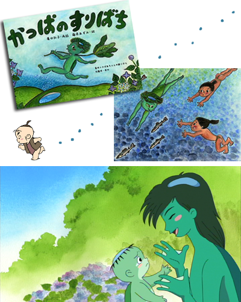

福島県塙町の創作民話
親子で味わう「ふるさと おはなしめぐり」待望の第一弾！
かっぱのすりばち予告編１
かっぱのすりばち予告編２
制作 株式会社エクラアニマル
原作：佐藤 修／企画：廣田 弘子・豊永 ひとみ
コンテ・演出：本多 敏行／プロデューサー：豊永 ひとみ
ナレーション・かあちゃん：柳沢 三千代 / かんきち：潘 めぐみ/松山 鷹志
尾崎 真実/小林 真麻/佐藤 友啓/景浦 大輔/小堀 友里絵/ 加藤 清司
村上 はるみ/大塚 まこと/橋本 典子/吉野 悠我(友情出演)